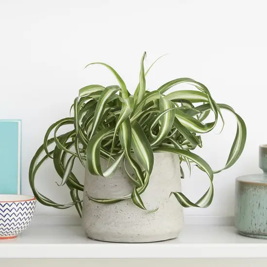

Spider Plant Care
- Bright inderect light is ideal
- Let the soil dry out between waterings (once or twice a week)
- Very tolerant of different climates
- Sensitive to salt and chemicles so be sure to use filtered water
Spider Plant Types
Variegated Spider Plant
- The most common
- White stipe down the middle of leaves
- Light and dark green leaf edges
Variegatum Spider Plant
- Grows much faster than the variegated
- Leaves have white edges and green centers
- Stiffer leaves, just a sturdier plant
Zerbra Spider Plant
- Similar to the varigatum with one obvious difference
- Young leaves have yellow edges that become white with age
Bonnie Spider Plant
- Same coloring as the varigated
- Curly, narrow leaves that can grow up to 18 inches long
Hawaiian Spider Plant
- Leaves are completely green with no white
- The green leaves have a warm, yellowish tinge
- Fast-growing and sturdy, like the variegatum